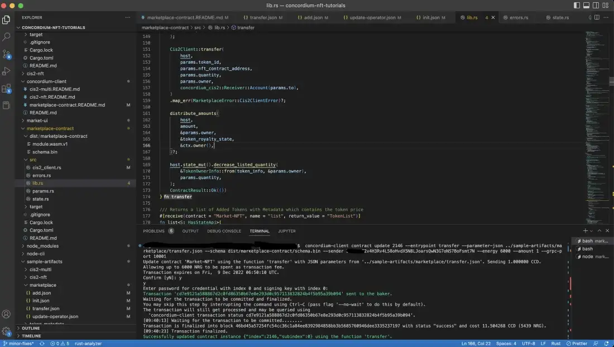
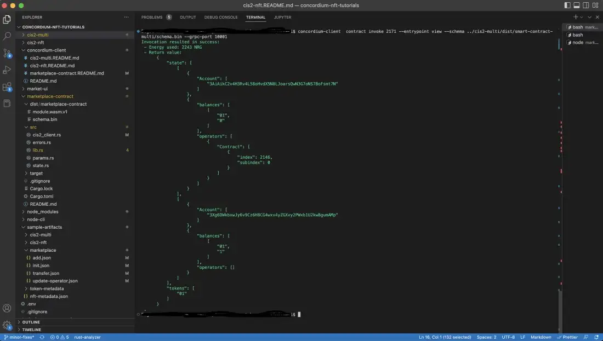

Build and deploy the smart contract#
The flow will be the same as the previous tutorials. You will build the contract, deploy it, and then create an instance of it. While selling your NFTs there will be some additional steps.
Now, you have the smart contract and helpers in your project’s folder. In that folder, create another one called dist/marketplace-contract for your output files. Then run the command below to build the contract and save the schema and Wasm file.
cargo concordium build --out dist/marketplace-contract/module.wasm.v1 --schema-out dist/marketplace-contract/schema.bin
Deploy the compiled Wasm file with the following command.
concordium-client module deploy dist/marketplace-contract/module.wasm.v1 --sender <YOUR-ACCOUNT-ADDRESS> --name <YOUR-CONTRACT-NAME> --grpc-port 10001
Initialize the marketplace smart contract#
Create an instance of the marketplace contract with the command below. Look at the init function. As you can see in the code below, it expects an InitParam input which will be used to set the commission value in the State::new() function while initializing your marketplace state.
/// Initializes a new Marketplace Contract
///
/// This function can be called by using InitParams.
/// The commission should be less than the maximum allowed value of 10000 basis points
#[init(contract = "Market-NFT", parameter = "InitParams")]
fn init<S: HasStateApi>(
ctx: &impl HasInitContext,
state_builder: &mut StateBuilder<S>,
) -> InitResult<State<S, ContractTokenId, ContractTokenAmount>> {
let params: InitParams = ctx
.parameter_cursor()
.get()
.map_err(|_e| MarketplaceError::ParseParams)?;
if params.commission > MAX_BASIS_POINTS {
return InitResult::Err(Reject::from(MarketplaceError::InvalidCommission));
}
Ok(State::new(state_builder, params.commission))
}
Run the following command to initialize the contract.
concordium-client contract init market --contract Market-NFT --parameter-json ../sample-artifacts/marketplace/init.json --sender <YOUR-ADDRESS> --energy 3000 --schema dist/marketplace-contract/schema.bin --grpc-port 10001

UpdateOperator and add token#
Now you are going to sell your NFT. In order to do that, you need to give the marketplace permission to transfer the token to a particular address. You do this with updateOperator() function in CIS-2, which is standard function. What you need to be careful about is that you need to call your token contract with its schema. Then you should be able to do an add() operation. Go to the sample artifacts and update-operator.json to change the marketplace address. You are allowing the marketplace contract to act on your behalf. If you want to test the logic behind it, skip this and try to call add() directly from the contract. It won’t work because your token’s state is not updated yet. As you can see below, the UpdateOperator() function updates the state of the token.
/// Logs an `UpdateOperator` event.
///
/// It rejects if:
/// - It fails to parse the parameter.
/// - Fails to log event.
#[receive(
contract = "cis-2",
name = "updateOperator",
parameter = "UpdateOperatorParams",
error = "ContractError",
enable_logger,
mutable
)]
fn contract_update_operator<S: HasStateApi>(
ctx: &impl HasReceiveContext,
host: &mut impl HasHost<State<S>, StateApiType = S>,
logger: &mut impl HasLogger,
) -> ContractResult<()> {
// Parse the parameter.
let UpdateOperatorParams(params) = ctx.parameter_cursor().get()?;
// Get the sender who invoked this contract function.
let sender = ctx.sender();
let (state, builder) = host.state_and_builder();
for param in params {
// Update the operator in the state.
match param.update {
OperatorUpdate::Add => state.add_operator(&sender, ¶m.operator, builder),
OperatorUpdate::Remove => state.remove_operator(&sender, ¶m.operator),
}
// Log the appropriate event
logger.log(
&Cis2Event::<ContractTokenId, ContractTokenAmount>::UpdateOperator(
UpdateOperatorEvent {
owner: sender,
operator: param.operator,
update: param.update,
},
),
)?;
}
Ok(())
}
Now run the command below.
concordium-client contract update <YOUR-TOKEN-INDEX> --entrypoint updateOperator --parameter-json ../sample-artifacts/marketplace/update-operator.json --schema ../cis2-multi/dist/smart-contract-multi/schema.bin --sender <YOUR-ADDRESS> --energy 6000 --grpc-port 10001
If successful, you will see something similar to below.

Before calling the add function, update your sample-artifacts/marketplace/add.json file with the index, tokenID, price, royalty and amount. Now call the add function with the command below.
concordium-client contract update <YOUR-MARKETPLACE-CONTRACT-INDEX> --entrypoint add --parameter-json ../sample-artifacts/marketplace/add.json --schema dist/marketplace-contract/schema.bin --sender <YOUR-ADDRESS> --energy 10000 --grpc-port 10001
Now you have successfully added your token to marketplace.

To check if the token is in the marketplace, call the list() function with the command below.
concordium-client contract invoke <YOUR-MARKETPLACE-INDEX> --entrypoint list --schema marketplace-contract/dist/marketplace-contract/schema.bin --grpc-port 10001
In the image below you can see that the token is listed.

Transfer the token#
Now you are ready to sell it from the marketplace. If you look what it does you see that it takes the token_info from input, gets the token’s quantity, price, and royalty values from its state. With 2 ensure!() it checks first whether the quantity that user wants to buy is sufficient or not and the amount is enough to buy them. Then through Cis2Client::transfer() it completes the token’s transfer operation, handles the payment with royalties, and removes token from the list.
/// Allows for transferring the token specified by TransferParams.
///
/// This function is the typical buy function of a Marketplace where one account can transfer an Asset by paying a price.
/// The transfer will fail of the Amount paid is < token_quantity * token_price
#[receive(
contract = "Market-NFT",
name = "transfer",
parameter = "TransferParams",
mutable,
payable
)]
fn transfer<S: HasStateApi>(
ctx: &impl HasReceiveContext,
host: &mut impl HasHost<ContractState<S>, StateApiType = S>,
amount: Amount,
) -> ContractResult<()> {
let params: TransferParams = ctx
.parameter_cursor()
.get()
.map_err(|_e| MarketplaceError::ParseParams)?;
let token_info = &TokenInfo {
id: params.token_id,
address: params.nft_contract_address,
};
let listed_token = host
.state()
.get_listed(token_info, ¶ms.owner)
.ok_or(MarketplaceError::TokenNotListed)?;
let listed_quantity = listed_token.1.quantity;
let price_per_unit = listed_token.1.price;
let token_royalty_state = listed_token.0;
ensure!(
listed_quantity.cmp(¶ms.quantity).is_ge(),
MarketplaceError::InvalidTokenQuantity
);
let price = price_per_unit.mul(params.quantity.0);
ensure!(
amount.cmp(&price).is_ge(),
MarketplaceError::InvalidAmountPaid
);
Cis2Client::transfer(
host,
params.token_id,
params.nft_contract_address,
params.quantity,
params.owner,
concordium_cis2::Receiver::Account(params.to),
)
.map_err(MarketplaceError::Cis2ClientError)?;
distribute_amounts(
host,
amount,
¶ms.owner,
&token_royalty_state,
&ctx.owner(),
)?;
host.state_mut().decrease_listed_quantity(
&TokenOwnerInfo::from(token_info, ¶ms.owner),
params.quantity,
);
ContractResult::Ok(())
}
Run the command below to invoke the transfer() function.
concordium-client contract update <YOUR-MARKETPLACE-CONTRACT> --entrypoint transfer --parameter-json ../sample-artifacts/marketplace/transfer.json --schema dist/marketplace-contract/schema.bin --sender <YOUR-ADDRESS> --energy 6000 --amount <PRICE> --grpc-port 10001
Below you can see a successful transfer.
Finally check the marketplace state once more with the list() function.
And cross check with the token contract’s latest state with its view() function command below.
concordium-client contract invoke <TOKEN-CONTRACT-INDEX> --entrypoint view --schema <YOUR-SCHEMA-FILE> --grpc-port 10001
As you can see, the first account has no balance anymore with the given token ID but the second one has.
 Copyright 2021 - 2023, Concordium Software ApS
Copyright 2021 - 2023, Concordium Software ApS
{kind=link}
{kind=link}
{kind=link}
{kind=link}
{kind=link}